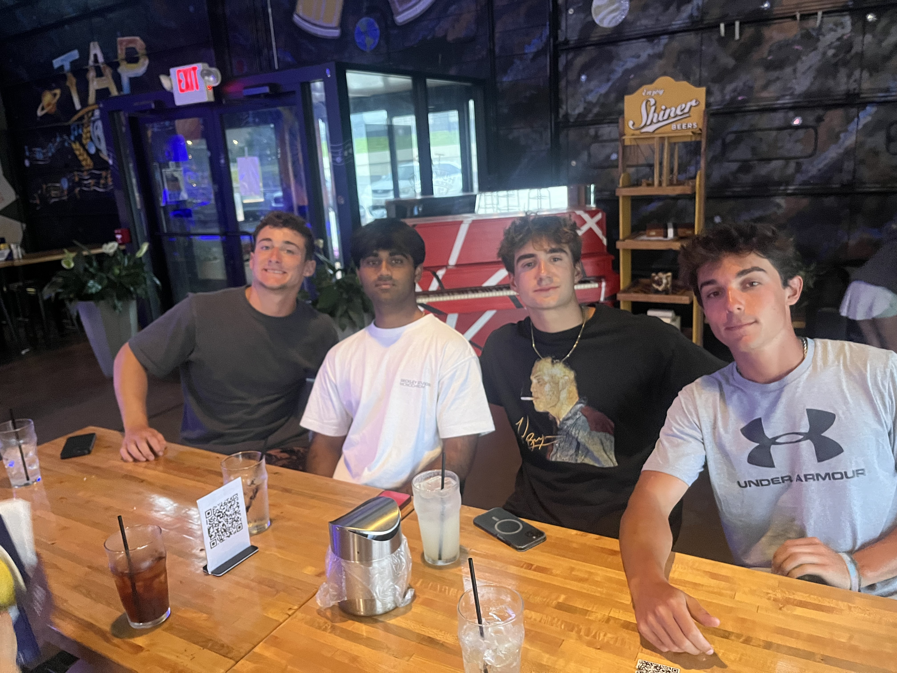
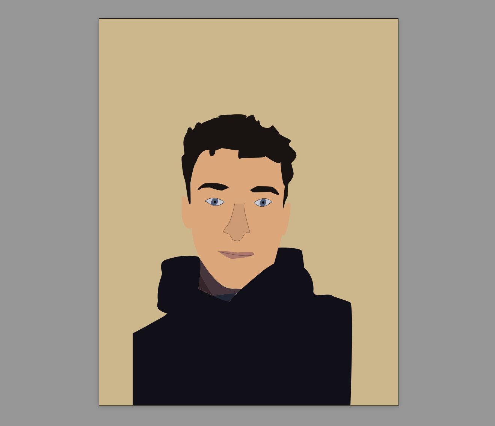

Design Beginnings
Design Fuego

For this project, I create an 'About Me' using Design Fuego. I learned the basics of HTML coding and how to use Visual Studio Code.
Logo A/B/C

In this project, I created three logos for my personal brand. These logos became the building blocks towards my final logo design.
UX Testing Logo Project

In this project, I ran a UX study to gain feeback on my set of logos. This study allowed me to gain constructive feedback from my peers. I then used this feedback to select and improve the best logo.
Cartoon Portrait

For the cartoon potrait project, I learned how to use the line tool in Illustrator. I have continued to utilze this tool frequently in other projects as well.
Good Design

For this project, I found a intriguing magazine cover and analyzed the principles that make the design work. I gained postive feedback from my peers who enjoyed the way I presented my work.